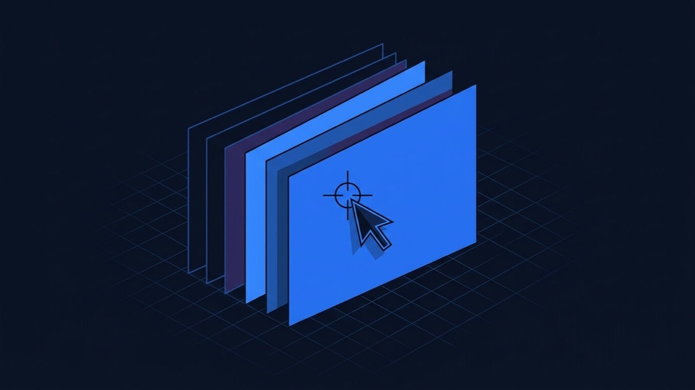

The design has fallen behind the brand
Colours, fonts and layout that no longer match the business, but the content structure underneath is fine. This is a Divi or Elementor global-style and section pass, not a new site.
Divi and Elementor edits, theme changes, custom sections and features added to a WordPress site you already have — without a rebuild, without losing the rankings and content that already work.
THE PROBLEM
A site that already works — already ranks, already has content, already has a URL structure people link to — does not need to be torn down because the header looks dated or a section is missing. Most of the “we need a new website” conversations I have end somewhere much smaller: change the theme, not the site.
Colours, fonts and layout that no longer match the business, but the content structure underneath is fine. This is a Divi or Elementor global-style and section pass, not a new site.
A booking form, a filtered listing, a bespoke layout the builder’s stock widgets can’t produce. I add the missing piece as a custom module or plugin rather than switching platforms.
Custom CSS or PHP pasted straight into a parent theme’s files gets wiped out on the next update. I move existing customizations into a child theme so they survive.
URLs, headings and indexed content stay in place. Anything structural gets checked against Core Web Vitals and crawlability before it ships, not discovered after.
SCOPE

PROCESS
What builder it runs on, whether previous edits went into a child theme or straight into core files, and what breaks if that gets touched.
A written scope and fixed quote covering exactly what is changing — a section, a template, a feature — so there is no ambiguity about what “done” looks like.
Every change is built and previewed on a staging copy first. The live site is never the first place a customization gets tested.
Headings, URLs, page speed and Core Web Vitals get checked against the baseline before launch, so the change is not costing you ranking to gain a look.
Deployed to live, then a short walkthrough so you know exactly what changed and how to adjust it yourself going forward.
BENEFITS
You keep the content, structure and rankings that already work, and pay only for the part that is actually changing.
Changes live in a child theme or a small custom plugin, not pasted into the parent theme, so a core or theme update does not undo the work.
URLs and indexed content stay put. What visitors and Google already found still gets found after the change ships.
RELEVANT WORK
Each of these is written up as a full case study — the problem, the approach, the stack and the outcome.
Design delivered as a flattened PDF, rebuilt into a responsive Divi 5 theme — the kind of page-builder precision a customization job depends on.
Built out in Elementor from reference sites and a requirements list rather than a fixed design file — a lot of what customization work looks like in practice.
Nursery and pre-school group with multiple settings — admissions, visit booking, Ofsted information and recruitment, built on Elementor templates.
Advertising agency covering branding and packaging, content creation, media production and 3D rendered commercials, styled in Elementor.
TESTIMONIALS
Every completed Upwork contract to date, each rated 5.0 — quoted as written.
“He is very punctual on timelines and has a complete inside out knowledge of WordPress theme development.”
“He completed the customer theme development work before time. The work delivered is awesome and he delivered more than expected. Really a good and honest freelancer to work with.”
“Ashekur Rahman delivers the work timely and perfectly. His knowledge in wordpress is very vast and he can do anything in wordpress and web developement.”
FAQ
What people ask before changing an existing WordPress site, answered up front rather than in the first call.
Customization works with what you already have — your existing theme, content and URLs — and changes specific parts of it: a section, a template, a feature, a design refresh. A rebuild replaces the site. Most sites that “look outdated” or “need a feature” do not actually need a rebuild, and customization is faster and cheaper when it fits.
Yes, both regularly. I work inside the page builder you already use — Divi modules and theme builder templates, or Elementor widgets and site settings — rather than fighting it or replacing it with something else.
Not if it is done properly. URLs, headings and existing content stay in place unless you specifically want them changed, and any structural change is tested against Core Web Vitals and crawlability before it goes live, not after.
A child theme or a small custom plugin, not direct edits to the parent theme’s files. That is the difference between a change that survives the next theme update and one that gets silently wiped out by it.
In most cases, yes — a custom section, a booking form, a filtered listing, a bespoke Divi module or Elementor widget. I will tell you upfront if what you are asking for is genuinely a rebuild rather than a customization, rather than forcing it in.
It depends on scope — a header redesign is a very different job from adding a custom feature across every product page. You get a fixed written quote after a short look at the current site, before anything begins. See current starting prices for a reference point.
Most of my clients are outside Bangladesh — the UK, Germany and the US primarily. I am based in Bangladesh and work across European and North American time zones without difficulty, with a same-day reply to anything urgent.
Available for new projects
NEXT STEP
Based in Bangladesh, working with clients worldwide. Describe the site and what’s not working — every serious enquiry gets a reply within one working day.
ALSO WORTH READING